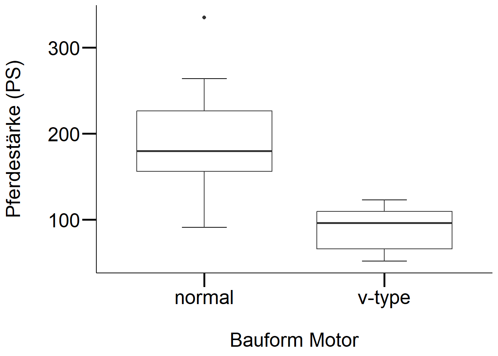
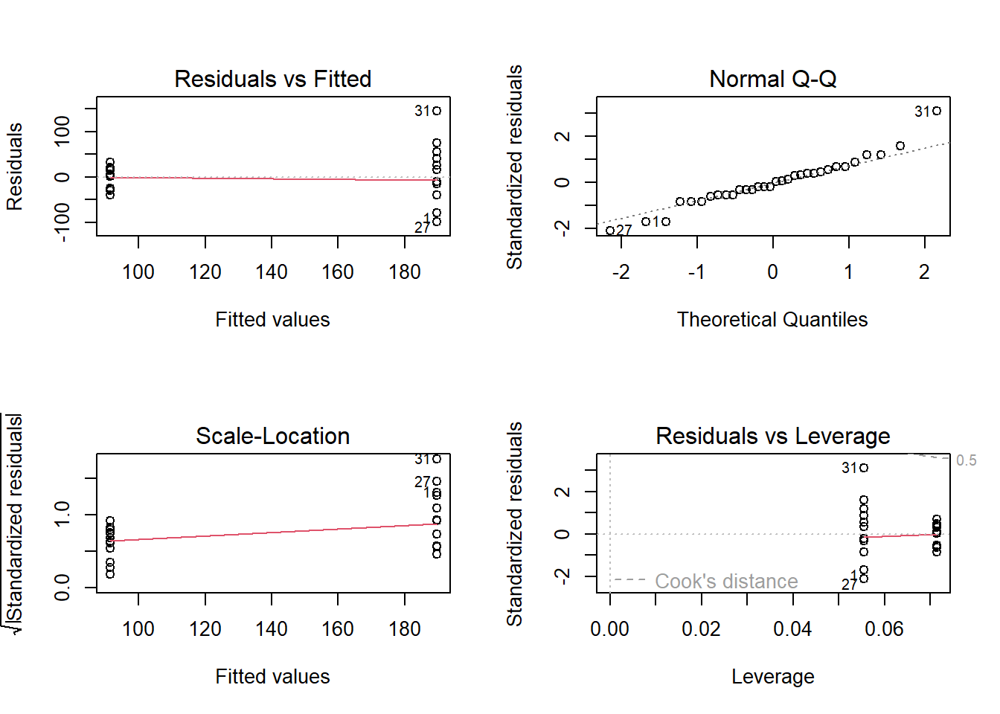

Download dieses Demoscript via “</>Code” (oben rechts)
Grundlagen
# lade Daten# mehr Info darüber: https://cran.r-project.org/web/packages/explore/vignettes/explore_mtcars.htmlcars <- mtcars# neue kategoriale variablecars <-as_tibble(cars) |># da "nur" data frame kann glimplse nichts damit anfangenmutate(vs_cat =if_else(vs ==0, "normal", "v-type")) |>mutate(am_cat =if_else(am ==0, "automatic", "manual"))# betrachte die Datensummary(cars)## mpg cyl disp hp ## Min. :10.40 Min. :4.000 Min. : 71.1 Min. : 52.0 ## 1st Qu.:15.43 1st Qu.:4.000 1st Qu.:120.8 1st Qu.: 96.5 ## Median :19.20 Median :6.000 Median :196.3 Median :123.0 ## Mean :20.09 Mean :6.188 Mean :230.7 Mean :146.7 ## 3rd Qu.:22.80 3rd Qu.:8.000 3rd Qu.:326.0 3rd Qu.:180.0 ## Max. :33.90 Max. :8.000 Max. :472.0 Max. :335.0 ## drat wt qsec vs ## Min. :2.760 Min. :1.513 Min. :14.50 Min. :0.0000 ## 1st Qu.:3.080 1st Qu.:2.581 1st Qu.:16.89 1st Qu.:0.0000 ## Median :3.695 Median :3.325 Median :17.71 Median :0.0000 ## Mean :3.597 Mean :3.217 Mean :17.85 Mean :0.4375 ## 3rd Qu.:3.920 3rd Qu.:3.610 3rd Qu.:18.90 3rd Qu.:1.0000 ## Max. :4.930 Max. :5.424 Max. :22.90 Max. :1.0000 ## am gear carb vs_cat ## Min. :0.0000 Min. :3.000 Min. :1.000 Length:32 ## 1st Qu.:0.0000 1st Qu.:3.000 1st Qu.:2.000 Class :character ## Median :0.0000 Median :4.000 Median :2.000 Mode :character ## Mean :0.4062 Mean :3.688 Mean :2.812 ## 3rd Qu.:1.0000 3rd Qu.:4.000 3rd Qu.:4.000 ## Max. :1.0000 Max. :5.000 Max. :8.000 ## am_cat ## Length:32 ## Class :character ## Mode :character ## ## ## glimpse(cars)## Rows: 32## Columns: 13## $ mpg <dbl> 21.0, 21.0, 22.8, 21.4, 18.7, 18.1, 14.3, 24.4, 22.8, 19.2, 17.…## $ cyl <dbl> 6, 6, 4, 6, 8, 6, 8, 4, 4, 6, 6, 8, 8, 8, 8, 8, 8, 4, 4, 4, 4, …## $ disp <dbl> 160.0, 160.0, 108.0, 258.0, 360.0, 225.0, 360.0, 146.7, 140.8, …## $ hp <dbl> 110, 110, 93, 110, 175, 105, 245, 62, 95, 123, 123, 180, 180, 1…## $ drat <dbl> 3.90, 3.90, 3.85, 3.08, 3.15, 2.76, 3.21, 3.69, 3.92, 3.92, 3.9…## $ wt <dbl> 2.620, 2.875, 2.320, 3.215, 3.440, 3.460, 3.570, 3.190, 3.150, …## $ qsec <dbl> 16.46, 17.02, 18.61, 19.44, 17.02, 20.22, 15.84, 20.00, 22.90, …## $ vs <dbl> 0, 0, 1, 1, 0, 1, 0, 1, 1, 1, 1, 0, 0, 0, 0, 0, 0, 1, 1, 1, 1, …## $ am <dbl> 1, 1, 1, 0, 0, 0, 0, 0, 0, 0, 0, 0, 0, 0, 0, 0, 0, 1, 1, 1, 0, …## $ gear <dbl> 4, 4, 4, 3, 3, 3, 3, 4, 4, 4, 4, 3, 3, 3, 3, 3, 3, 4, 4, 4, 3, …## $ carb <dbl> 4, 4, 1, 1, 2, 1, 4, 2, 2, 4, 4, 3, 3, 3, 4, 4, 4, 1, 2, 1, 1, …## $ vs_cat <chr> "normal", "normal", "v-type", "v-type", "normal", "v-type", "no…## $ am_cat <chr> "manual", "manual", "manual", "automatic", "automatic", "automa…# Assoziation zwischen Anzahl Zylinder und Motorentyp ()table(cars$vs_cat, cars$am_cat) # Achtung: sieht aus, als gäbe es weniger V-Motoren bei den handgeschalteten Autos## ## automatic manual## normal 12 6## v-type 7 7# lass und das überprüfen# achtung: bei chi-square test kommt es sehr auf das format drauf an (er erwartet entweder vektoren oder eine matrix!)# exkurs um in es in ein matrix form zu bringenchi_sq_matrix <-xtabs(~ vs_cat + am_cat, data =as.data.frame(cars)) # in diesem Spezialfall haben wir keine Kriteriumsvariable# 1.versionchi_sq <-chisq.test(chi_sq_matrix)# 2. versionchi_sq <-chisq.test(cars$am_cat, cars$vs_cat)# resp. fisher exacter test verwenden, da 2x2 tablefisher.test(chi_sq_matrix)## ## Fisher's Exact Test for Count Data## ## data: chi_sq_matrix## p-value = 0.4727## alternative hypothesis: true odds ratio is not equal to 1## 95 percent confidence interval:## 0.3825342 10.5916087## sample estimates:## odds ratio ## 1.956055# fisher exakter testfisher.test(cars$am_cat, cars$vs_cat)## ## Fisher's Exact Test for Count Data## ## data: cars$am_cat and cars$vs_cat## p-value = 0.4727## alternative hypothesis: true odds ratio is not equal to 1## 95 percent confidence interval:## 0.3825342 10.5916087## sample estimates:## odds ratio ## 1.956055# visualisieren: kudos goes to https://mgimond.github.io/Stats-in-R/ChiSquare_test.html#3_two_factor_classificationOP <-par(mfrow =c(1, 2), "mar"=c(1, 1, 3, 1))mosaicplot(chi_sq$observed, cex.axis =1, main ="Observed counts")mosaicplot(chi_sq$expected, cex.axis =1, main ="Expected counts\n(if class had no influence)")
par(OP)
Möglicher Text für Ergebnisse
Der \(\chi^2\)-Test sagt uns, dass das Art des Motors und Art des Fahrwerks statistisch nicht zusammenhängen. Es gibt keine signifikante Unterscheide zwischen den Variablen “VS” und “AM - Transmission” (p = .555). Der Fisher exacter Test bestätigt diesen Befund. Die Odds Ratio (OR) sagt uns hingegen - unter der Prämisse, dass “normale” Motoren eher mit automatischen und V-Motoren eher mit handgeschalteten Fahrwerken ausgestattet sind - dass die Chance doppelt so hoch ist, dass ein Auto mit “normalem” Motor automatisch geschaltet ist, als dies bei einem Auto mit V-Motor der Fall wäre
# define datasetcars <- mtcars# neue kategoriale variablecars <-as_tibble(cars) |># da "nur" data frame kann glimplse nichts damit anfangenmutate(vs_cat =if_else(vs ==0, "normal", "v-type")) |>mutate(am_cat =if_else(am ==0, "automatic", "manual"))# bei t-Test immer zuerst visualisieren: in diesem Fall Boxplot mit Variablen Getriebe (v- vs. s-motor) und Anzahl Pferdestärkeggplot2::ggplot(cars, aes(y = hp, x = vs_cat)) +stat_boxplot(geom ="errorbar", width = .25) +geom_boxplot() +# geom_violin()+labs(x ="\nBauform Motor", y ="Pferdestärke (PS)\n") + mytheme

# alternativboxplot(cars$hp ~ cars$vs_cat) # sieht ganz ok aus, jedoch weist die variable "normale Motoren" deutlich eine grössere Streuung aus -> siehe aov.1 und deren Modelgüte-Plots
# Definiere Model: t-Test, wobei die AV metrisch (in unserem Fall eine Zählvariable) sein mussttest <-t.test(cars$hp ~ cars$vs_cat)aov.1<-aov(cars$hp ~ cars$vs_cat)# schaue Modellgüte anpar(mfrow =c(2, 2))plot(aov.1)

# zeige resultatettest## ## Welch Two Sample t-test## ## data: cars$hp by cars$vs_cat## t = 6.2908, df = 23.561, p-value = 1.82e-06## alternative hypothesis: true difference in means between group normal and group v-type is not equal to 0## 95 percent confidence interval:## 66.06161 130.66854## sample estimates:## mean in group normal mean in group v-type ## 189.72222 91.35714summary.lm(aov.1)## ## Call:## aov(formula = cars$hp ~ cars$vs_cat)## ## Residuals:## Min 1Q Median 3Q Max ## -98.72 -25.61 -4.04 22.55 145.28 ## ## Coefficients:## Estimate Std. Error t value Pr(>|t|) ## (Intercept) 189.72 11.35 16.720 < 2e-16 ***## cars$vs_catv-type -98.37 17.16 -5.734 2.94e-06 ***## ---## Signif. codes: 0 '***' 0.001 '**' 0.01 '*' 0.05 '.' 0.1 ' ' 1## ## Residual standard error: 48.14 on 30 degrees of freedom## Multiple R-squared: 0.5229, Adjusted R-squared: 0.507 ## F-statistic: 32.88 on 1 and 30 DF, p-value: 2.941e-06# wie würdet ihr nun die Ergebnisse darstellen?
# für mehr infos here: https://cran.r-project.org/web/packages/datasauRus/vignettes/Datasaurus.htmllibrary("datasauRus")## Error in library("datasauRus"): there is no package called 'datasauRus'if(requireNamespace("dplyr")){suppressPackageStartupMessages(library("dplyr")) dt <- datasaurus_dozen |>group_by(dataset) |>summarize(mean_x =mean(x),mean_y =mean(y),std_dev_x =sd(x),std_dev_y =sd(y),corr_x_y =cor(x, y) )}## Error in group_by(datasaurus_dozen, dataset): object 'datasaurus_dozen' not found# check data structureglimpse(dt)## function (x, df, ncp, log = FALSE)# plot two examples if(requireNamespace("ggplot2")){library("ggplot2") dt =filter(datasaurus_dozen, dataset =="dino"| dataset =="slant_up")ggplot(dt, aes(x=x, y=y, colour=dataset))+geom_point()+theme_bw() +theme(legend.position ="none") +facet_wrap(~dataset) +geom_smooth(method ="lm", se =FALSE)}## Error in filter(datasaurus_dozen, dataset == "dino" | dataset == "slant_up"): object 'datasaurus_dozen' not found
Quellcode
---date: 2023-11-13lesson: StatKons1thema: Statistik Grundlagenindex: 1format: html: code-tools: source: true---# StatKons1: Demo- Download dieses Demoscript via "\</\>Code" (oben rechts)## Grundlagen```{r}#| echo: false#| results: hide# lade Packageslibrary("ggplot2")library("dplyr")library("tibble")# mythememytheme <-theme_classic() +theme(axis.line =element_line(color ="black"),axis.text =element_text(size =20, color ="black"),axis.title =element_text(size =20, color ="black"),axis.ticks =element_line(size =1, color ="black"),axis.ticks.length =unit(.5, "cm") )``````{r, message=FALSE, eval=TRUE}# lade Daten# mehr Info darüber: https://cran.r-project.org/web/packages/explore/vignettes/explore_mtcars.htmlcars <- mtcars# neue kategoriale variablecars <-as_tibble(cars) |># da "nur" data frame kann glimplse nichts damit anfangenmutate(vs_cat =if_else(vs ==0, "normal", "v-type")) |>mutate(am_cat =if_else(am ==0, "automatic", "manual"))# betrachte die Datensummary(cars)glimpse(cars)# Assoziation zwischen Anzahl Zylinder und Motorentyp ()table(cars$vs_cat, cars$am_cat) # Achtung: sieht aus, als gäbe es weniger V-Motoren bei den handgeschalteten Autos# lass und das überprüfen# achtung: bei chi-square test kommt es sehr auf das format drauf an (er erwartet entweder vektoren oder eine matrix!)# exkurs um in es in ein matrix form zu bringenchi_sq_matrix <-xtabs(~ vs_cat + am_cat, data =as.data.frame(cars)) # in diesem Spezialfall haben wir keine Kriteriumsvariable# 1.versionchi_sq <-chisq.test(chi_sq_matrix)# 2. versionchi_sq <-chisq.test(cars$am_cat, cars$vs_cat)# resp. fisher exacter test verwenden, da 2x2 tablefisher.test(chi_sq_matrix)# fisher exakter testfisher.test(cars$am_cat, cars$vs_cat)# visualisieren: kudos goes to https://mgimond.github.io/Stats-in-R/ChiSquare_test.html#3_two_factor_classificationOP <-par(mfrow =c(1, 2), "mar"=c(1, 1, 3, 1))mosaicplot(chi_sq$observed, cex.axis =1, main ="Observed counts")mosaicplot(chi_sq$expected, cex.axis =1, main ="Expected counts\n(if class had no influence)")par(OP)```## Möglicher Text für ErgebnisseDer $\chi^2$-Test sagt uns, dass das Art des Motors und Art des Fahrwerks statistisch nicht zusammenhängen. Es gibt keine signifikante Unterscheide zwischen den Variablen "VS" und "AM - Transmission" (*p* = .555). Der Fisher exacter Test bestätigt diesen Befund.Die Odds Ratio (OR) sagt uns hingegen - unter der Prämisse, dass "normale" Motoren eher mit automatischen und V-Motoren eher mit handgeschalteten Fahrwerken ausgestattet sind - dass die Chance doppelt so hoch ist, dass ein Auto mit "normalem" Motor automatisch geschaltet ist, als dies bei einem Auto mit V-Motor der Fall wäre```{r, eval=TRUE}# define datasetcars <- mtcars# neue kategoriale variablecars <-as_tibble(cars) |># da "nur" data frame kann glimplse nichts damit anfangenmutate(vs_cat =if_else(vs ==0, "normal", "v-type")) |>mutate(am_cat =if_else(am ==0, "automatic", "manual"))# bei t-Test immer zuerst visualisieren: in diesem Fall Boxplot mit Variablen Getriebe (v- vs. s-motor) und Anzahl Pferdestärkeggplot2::ggplot(cars, aes(y = hp, x = vs_cat)) +stat_boxplot(geom ="errorbar", width = .25) +geom_boxplot() +# geom_violin()+labs(x ="\nBauform Motor", y ="Pferdestärke (PS)\n") + mytheme# alternativboxplot(cars$hp ~ cars$vs_cat) # sieht ganz ok aus, jedoch weist die variable "normale Motoren" deutlich eine grössere Streuung aus -> siehe aov.1 und deren Modelgüte-Plots# Definiere Model: t-Test, wobei die AV metrisch (in unserem Fall eine Zählvariable) sein mussttest <-t.test(cars$hp ~ cars$vs_cat)aov.1<-aov(cars$hp ~ cars$vs_cat)# schaue Modellgüte anpar(mfrow =c(2, 2))plot(aov.1)# zeige resultatettestsummary.lm(aov.1)# wie würdet ihr nun die Ergebnisse darstellen?``````{r}# für mehr infos here: https://cran.r-project.org/web/packages/datasauRus/vignettes/Datasaurus.htmllibrary("datasauRus")if(requireNamespace("dplyr")){suppressPackageStartupMessages(library("dplyr")) dt <- datasaurus_dozen |>group_by(dataset) |>summarize(mean_x =mean(x),mean_y =mean(y),std_dev_x =sd(x),std_dev_y =sd(y),corr_x_y =cor(x, y) )}# check data structureglimpse(dt)# plot two examples if(requireNamespace("ggplot2")){library("ggplot2") dt =filter(datasaurus_dozen, dataset =="dino"| dataset =="slant_up")ggplot(dt, aes(x=x, y=y, colour=dataset))+geom_point()+theme_bw() +theme(legend.position ="none") +facet_wrap(~dataset) +geom_smooth(method ="lm", se =FALSE)}```